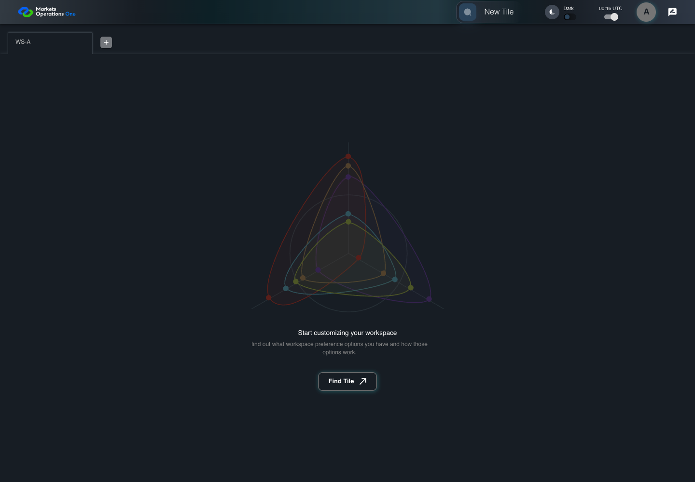

AUTH-092 background rotation preserves newer access
PASS · application/run-050/auth-092-background-rotation-preserves-newer-access-f4ea9ab7b724-attempt-1 · ACTUAL_APPLICATION_LOCAL_SERVICES
Actual MFE; controlled API responses, clock, visibility and suspension adapters. Unsigned browser-only credentials. No natural lifecycle, real identity or service policy acceptance.
2026-10-22T06:06:01.692Z to 2026-10-22T06:06:05.688Z
Assertions and result · Artifact manifest · Exact run inputs and source hashes
Result SHA-256:be3db3a9bdfd9c7389608d2d32f0c6ebf48cce11425429a4ff90962580581b84Machine observations
- session-fixture.json
184ba6cfbf03537a639cfdddfe865ceeabf72e7a985a8b8c560dd5d365504b37 - session-observations.json
ffdc5bc3e7772dfd41b8012413349e65573e4266b79c19745ea1a892081e98f4
Screenshot capture: CAPTURED. Named frames: 10.
Step screenshot bindings: COMPLETE. 9/9 canonical steps have execution screenshots.
Bindings measure structural coverage only. They do not establish screenshot content quality or relevance.
Screenshot content review: NOT_REVIEWED. Recorded context: 0/10 frames. Identical image bytes: 8 repeated frames. Recorded context does not establish human visual review.
Canonical step timeline
Given User A is authenticated as user-a in an isolated browser context
Execution: PASSED.
1. step-01 Visible state after step 1: Given User A is authenticated as user-a in an isolated browser context
2026-10-22T06:06:03.811Z · 1440×1000
Step: /Users/lushevol/code/github/ratan-release-impact/workbench/tasks/ui-test-coverage-20261022/test-cases.md:3828
SHA-256:173819b107f9721ddd580be6e85c728fb50ae34f4f23504c76db9e83104ff541And the selected fixture tab is labelled "WS-A" inside the tablist named "workspaces" on the Home page
Execution: PASSED.
2. step-02 Visible state after step 2: And the selected fixture tab is labelled "WS-A" inside the tablist named "workspaces" on the Home page
2026-10-22T06:06:03.954Z · 1440×1000
Step: /Users/lushevol/code/github/ratan-release-impact/workbench/tasks/ui-test-coverage-20261022/test-cases.md:3829
SHA-256:173819b107f9721ddd580be6e85c728fb50ae34f4f23504c76db9e83104ff541Image bytes match frame 1. An unchanged image can be valid for consecutive assertions. This match does not establish correct step content.
And access A expires at controlled time T+900 seconds; refresh R expires at T+13524 seconds
Execution: PASSED.
3. step-03 Visible state after step 3: And access A expires at controlled time T+900 seconds; refresh R expires at T+13524 seconds
2026-10-22T06:06:04.169Z · 1440×1000
Step: /Users/lushevol/code/github/ratan-release-impact/workbench/tasks/ui-test-coverage-20261022/test-cases.md:3830
SHA-256:173819b107f9721ddd580be6e85c728fb50ae34f4f23504c76db9e83104ff541Image bytes match frame 2. An unchanged image can be valid for consecutive assertions. This match does not establish correct step content.
And the browser is hidden; accepted background rotation installs access B expiring at T+1800 seconds
Execution: PASSED.
4. step-04 Visible state after step 4: And the browser is hidden; accepted background rotation installs access B expiring at T+1800 seconds
2026-10-22T06:06:04.409Z · 1440×1000
Step: /Users/lushevol/code/github/ratan-release-impact/workbench/tasks/ui-test-coverage-20261022/test-cases.md:3831
SHA-256:173819b107f9721ddd580be6e85c728fb50ae34f4f23504c76db9e83104ff541Image bytes match frame 3. An unchanged image can be valid for consecutive assertions. This match does not establish correct step content.
When the controlled browser clock reaches T+1000 seconds
Execution: PASSED.
5. step-05 Visible state after step 5: When the controlled browser clock reaches T+1000 seconds
2026-10-22T06:06:04.719Z · 1440×1000
Step: /Users/lushevol/code/github/ratan-release-impact/workbench/tasks/ui-test-coverage-20261022/test-cases.md:3832
SHA-256:7f4574e9f15de161bbf577de6d53045b976fe2f08459c5384a2ec16267ac5f1eAnd the browser changes this page from hidden to visible
Execution: PASSED.
6. step-06 Visible state after step 6: And the browser changes this page from hidden to visible
2026-10-22T06:06:04.883Z · 1440×1000
Step: /Users/lushevol/code/github/ratan-release-impact/workbench/tasks/ui-test-coverage-20261022/test-cases.md:3833
SHA-256:7f4574e9f15de161bbf577de6d53045b976fe2f08459c5384a2ec16267ac5f1eImage bytes match frame 5. An unchanged image can be valid for consecutive assertions. This match does not establish correct step content.
Then the dialog named "Your session has been expired" on the Home page is absent
Execution: PASSED.
7. step-07 Visible state after step 7: Then the dialog named "Your session has been expired" on the Home page is absent
2026-10-22T06:06:05.058Z · 1440×1000
Step: /Users/lushevol/code/github/ratan-release-impact/workbench/tasks/ui-test-coverage-20261022/test-cases.md:3834
SHA-256:7f4574e9f15de161bbf577de6d53045b976fe2f08459c5384a2ec16267ac5f1eImage bytes match frame 6. An unchanged image can be valid for consecutive assertions. This match does not establish correct step content.
And the tab labelled "WS-A" inside the tablist named "workspaces" on the Home page is visible
Execution: PASSED.
8. step-08 Visible state after step 8: And the tab labelled "WS-A" inside the tablist named "workspaces" on the Home page is visible
2026-10-22T06:06:05.169Z · 1440×1000
Step: /Users/lushevol/code/github/ratan-release-impact/workbench/tasks/ui-test-coverage-20261022/test-cases.md:3835
SHA-256:7f4574e9f15de161bbf577de6d53045b976fe2f08459c5384a2ec16267ac5f1eImage bytes match frame 7. An unchanged image can be valid for consecutive assertions. This match does not establish correct step content.
And the installed access credential remains B
Execution: PASSED.
9. step-09 Visible state after step 9: And the installed access credential remains B
2026-10-22T06:06:05.256Z · 1440×1000
Step: /Users/lushevol/code/github/ratan-release-impact/workbench/tasks/ui-test-coverage-20261022/test-cases.md:3836
SHA-256:7f4574e9f15de161bbf577de6d53045b976fe2f08459c5384a2ec16267ac5f1eImage bytes match frame 8. An unchanged image can be valid for consecutive assertions. This match does not establish correct step content.
Additional named frames

The final visible state after the named test assertions.
2026-10-22T06:06:05.452Z · 1440×1000Step: Test source: /Users/lushevol/code/github/ratan-release-impact/workbench/e2e/audit-specs/auth-session-expanded.spec.ts:185
SHA-256:
7f4574e9f15de161bbf577de6d53045b976fe2f08459c5384a2ec16267ac5f1eImage bytes match frame 9. An unchanged image can be valid for consecutive assertions. This match does not establish correct step content.
Screenshots establish visible state only. Assertions and traces support functional claims.